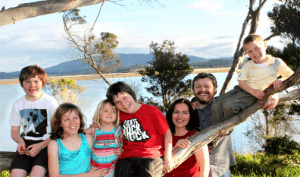
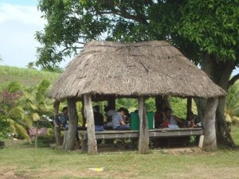
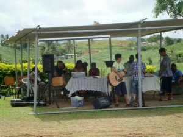
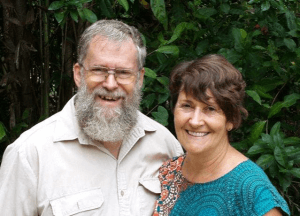
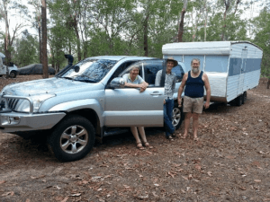
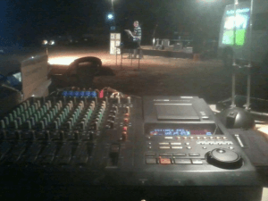
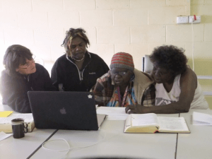
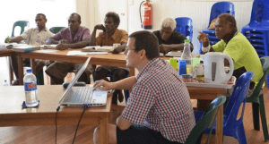
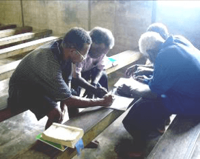

<?xml version="1.0" encoding="UTF-8"?><rss version="2.0"
	xmlns:content="http://purl.org/rss/1.0/modules/content/"
	xmlns:wfw="http://wellformedweb.org/CommentAPI/"
	xmlns:dc="http://purl.org/dc/elements/1.1/"
	xmlns:atom="http://www.w3.org/2005/Atom"
	xmlns:sy="http://purl.org/rss/1.0/modules/syndication/"
	xmlns:slash="http://purl.org/rss/1.0/modules/slash/"
	>

<channel>
	<title>Missions Update &#8211; Wagga Church of Christ</title>
	<atom:link href="https://www.waggachurchofchrist.org.au/category/missions-update/feed/" rel="self" type="application/rss+xml" />
	<link>https://www.waggachurchofchrist.org.au</link>
	<description>Growing together In Christ to Impact Our World</description>
	<lastBuildDate>Sun, 30 Dec 2018 05:21:35 +0000</lastBuildDate>
	<language>en-AU</language>
	<sy:updatePeriod>hourly</sy:updatePeriod>
	<sy:updateFrequency>1</sy:updateFrequency>
	<generator>https://wordpress.org/?v=4.9.9</generator>

<image>
	<url>https://www.waggachurchofchrist.org.au/wp-content/uploads/2016/07/cropped-cross_sml_2-32x32.png</url>
	<title>Missions Update &#8211; Wagga Church of Christ</title>
	<link>https://www.waggachurchofchrist.org.au</link>
	<width>32</width>
	<height>32</height>
</image> 
	<item>
		<title>Pieterse Family Update</title>
		<link>https://www.waggachurchofchrist.org.au/pieterse-family-update/</link>
		<pubDate>Tue, 18 Oct 2016 10:52:00 +0000</pubDate>
		<dc:creator><![CDATA[Steve]]></dc:creator>
				<category><![CDATA[Missions Update]]></category>
		<category><![CDATA[Mission]]></category>

		<guid isPermaLink="false">https://www.waggachurchofchrist.org.au/?p=749</guid>
		<description><![CDATA[<p>We are blessed to announce that we own the mission Campus!  We really had our faith stretched like never before, however we are thankful for the favour God gave us.  He really proved His faithfulness in a big way.  We would also like to thank you for all your prayers and support during the last&#8230;</p>
<p>The post <a rel="nofollow" href="../../../pieterse-family-update/index.html">Pieterse Family Update</a> appeared first on <a rel="nofollow" href="../../../index.html">Wagga Church of Christ</a>.</p>
]]></description>
				<content:encoded><![CDATA[<p>We are blessed to announce that we own the mission Campus!  We really had our faith stretched like never before, however we are thankful for the favour God gave us.  He really proved His faithfulness in a big way.  We would also like to thank you for all your prayers and support during the last few years. We could not have done it without you, so we want you to know that you are much appreciated.</p>
<p>So how did we do it, you might ask?<br />
We raised half the money and then got a $1.120 million loan. We thank God for the favour we had with the bank. We never wanted to have a mortgage, but we came to the realisation that God can provide in various ways and we continue to trust Him to pay it off asap. It is a flexible loan that allows us to pay it off at anytime with no penalty fees. So yes, the journey continues for us to walk in faith. One of the things I learned in YWAM is that we also are having to walk in faith. There’s never a time that we do not rely on God, and He always comes through.</p>
<p>The ministry continues to grow HERE IN SYDNEY and we have many new young and exciting staff that have joined us. On a weekly basis we run breakfast clubs in schools, teach scripture in schools, do evangelism and provide food for the poor and needy. </p>
<p>This year we have seen many people come to know Christ in our community, also had many local churches join us in evangelism. It’s been great to help mobilize the local churches to go out and make disciples. We’ve also had some great Discipleship Training Schools (DTS) take place. I never get tired of seeing the students get transformed and then seeing them go and make disciples. </p>
<p>The year 2016 and has been very challenging for us as a family. That is why I am so grateful for the grace of our Lord Jesus. He has really been carrying us through every storm and we can truly say that it has only been by grace. As you know, my dad recently passed away and I would like to thank you for your prayers. As the oldest son, it was very difficult to lead my family through this process, but it was prayer that carried me through. My dad’s death took a huge hit on us financially, emotionally and physically. However everything worked out good at the end and we were able to send him off with dignity.<br />
We have a current Discipleship Training School (DTS) running on Campus and an outreach team that’s been in India and are now in Zimbabwe. Here’s a testimony from one of our 18 year old students.  </p>
<p>“Everyday we are going to the slums and praying for and talking to people. One day we came to a flat and there was a woman sitting with her leg in a cast. She told us that she broke her leg just a week ago and that she was in pain and couldn&#8217;t do much anymore. She told us that in 3 weeks she was going back to the doctor and that she might need surgery if it doesn&#8217;t heal properly. She was a believer in Jesus but we asked her if she believed that God could heal her. She said yes, so we prayed for her. After a week had gone by we were once again in the same slum and saw her again. But she was no longer in a cast. She was walking around with TWO healthy legs. She told us that everything was good and that she didn&#8217;t need surgery! God had healed her! Praise the Lord!<br />
As I mentioned before we currently have a DTS running on base and will have 2 more this year in July and September. After heaps of prayer and seeking God, I have also decided to do formal study for a year. I’m doing a Masters in Business and Leadership and believe that it will help me extend the ministry that God has called us to do. That means that I will have to take a step back from day to day ministry on the Campus to make time for studying. Tania will continue to give oversight to our training and daily ministry departments. I will still be teaching and giving spiritual oversight as normal. We also have some new leaders stepping up to help carry the load we carry. We are really looking forward to this new venture and would really appreciate your prayers. </p>
<p>Some recent events for us: <br />
July: DTS and English as a second language school intake <br />
August:USA tour and leadership conference (Whole family) <br />
September:DTS intake and travelling to Fiji (Etienne and Elisha) <br />
October:Teaching and Ministering in India (Etienne)</p>
<p>We are very honoured to serve YWAM Sydney and find it a joy to be leading this mission. So thank you for all you prayer, support and partnership that enable us to reach nations and see communities transformed. We pray God’s richest blessing over you and your families. </p>
<p>May God bless you, <br />
Pieterse family</p>
<p>WE ARE SERVING HIM WHO IS &#8211; &#8211; &#8211; &#8211; &#8211; &#8211; &#8211; &#8211; &#8211;</p>
<p>The post <a rel="nofollow" href="../../../pieterse-family-update/index.html">Pieterse Family Update</a> appeared first on <a rel="nofollow" href="../../../index.html">Wagga Church of Christ</a>.</p>
]]></content:encoded>
			</item>
		<item>
		<title>Fabrina Rousseau Update (Compassion, Haiti)</title>
		<link>https://www.waggachurchofchrist.org.au/fabrina-rousseau-update-compassion-haiti/</link>
		<pubDate>Tue, 18 Oct 2016 10:51:21 +0000</pubDate>
		<dc:creator><![CDATA[Steve]]></dc:creator>
				<category><![CDATA[Missions Update]]></category>
		<category><![CDATA[Mission]]></category>

		<guid isPermaLink="false">https://www.waggachurchofchrist.org.au/?p=747</guid>
		<description><![CDATA[<p>Fabrina is the Wagga Church of Christ’s sponsored foster child, born in 2003 and living in one of the world’s poorest countries. The church works through COMPASSION Australia to communicate with her and to offer her monthly financial support.</p>
<p>The post <a rel="nofollow" href="../../../fabrina-rousseau-update-compassion-haiti/index.html">Fabrina Rousseau Update (Compassion, Haiti)</a> appeared first on <a rel="nofollow" href="../../../index.html">Wagga Church of Christ</a>.</p>
]]></description>
				<content:encoded><![CDATA[<p>Fabrina <span lang="EN-AU" style="margin: 0px; font-family: 'Arial',sans-serif; font-size: 11pt;"><span style="color: #000000;">is the Wagga Church of Christ’s sponsored foster child, born in 2003 and living in one of the world’s poorest countries. The church works through COMPASSION Australia to communicate with her and to offer her monthly financial support.</span></span></p>
<p>The post <a rel="nofollow" href="../../../fabrina-rousseau-update-compassion-haiti/index.html">Fabrina Rousseau Update (Compassion, Haiti)</a> appeared first on <a rel="nofollow" href="../../../index.html">Wagga Church of Christ</a>.</p>
]]></content:encoded>
			</item>
		<item>
		<title>Matthews Family Update</title>
		<link>https://www.waggachurchofchrist.org.au/matthews-family-update/</link>
		<pubDate>Tue, 18 Oct 2016 10:50:17 +0000</pubDate>
		<dc:creator><![CDATA[Steve]]></dc:creator>
				<category><![CDATA[Missions Update]]></category>
		<category><![CDATA[Mission]]></category>

		<guid isPermaLink="false">https://www.waggachurchofchrist.org.au/?p=745</guid>
		<description><![CDATA[<p>Ken Matthews is the Chief Commissioner pf Everyman&#8217;s Welfare Service &#8211; the philanthropic organisation associated closely with the Australian Defence Force, and whose role is to witness to Christ among the soldiers, and to serve their needs wherever possible. Everyman&#8217;s is a faith-based organisation of high repute within the Army, seeking to build the spiritual&#8230;</p>
<p>The post <a rel="nofollow" href="../../../matthews-family-update/index.html">Matthews Family Update</a> appeared first on <a rel="nofollow" href="../../../index.html">Wagga Church of Christ</a>.</p>
]]></description>
				<content:encoded><![CDATA[<p>Ken Matthews is the Chief Commissioner pf <a href="https://www.everymans.org.au/">Everyman&#8217;s Welfare Service</a> &#8211; the philanthropic organisation associated closely with the Australian Defence Force, and whose role is to witness to Christ among the soldiers, and to serve their needs wherever possible.</p>
<p>Everyman&#8217;s is a faith-based organisation of high repute within the Army, seeking to build the spiritual lives of the soldiers wherever they find them  &#8211;  be that inside the Everymans&#8217;s Recreation Centres at base camp, or on the operational fields of training where their famous Everyman&#8217;s Brew Trucks are filled with goodies and beverages satisfying the soldiers needs. In this role, Everyman&#8217;s has been serving the Australian Defence Force since 1940.</p>
<p></p>
<p>Our local Army Base at Kapooka in Wagga Wagga has Everyman&#8217;s representatives, whilst Ken himself is based at Everyman&#8217;s Headquarters in Bandiana, Victoria. Being Chief Commissioner, Ken finds himself thrown together with many Senior Army Leaders helping to formulate delicate policies for the well-being of the ordinary soldier, particularly in relation to the more spiritual matters that a military organisation is ill-equipped to deal with. For such delicate matters as soldier suicide or PTSD, other related spiritual organisations (such as Army Chaplains, or Salvation Army Counselors) are also brought in to confer and advise.</p>
<p>Unfortunately, Ken has lately (Jan. 2017) become a widower with the loss of his dear wife Leonie, who was well known for her personal qualities, ministering capacities, Christian witnessing, and ability to supply hundreds of ANZAC biscuits for the Everyman&#8217;s Brew Trucks.</p>
<p>We salute you Ken in your testing role, and pray for smoother and brighter Christian paths ahead. May God grant you the fruitfulness you seek.</p>
<p>&nbsp;</p>
<p>Update from <em>Pastor Ross Brinkman</em>, 6th January 2017:</p>
<p><em>I am saddened to have to let you know that our precious Leonie Matthews went home to be with the Lord yesterday. She has as you know been in palliative care for some time due to incurable cancer. </em></p>
<p><em>Please pray for Ken and their two young adult children as they come to terms with such deep loss. </em></p>
<p><em>Below is an extract from one of Leonie&#8217;s own news letters during her struggles with this disease. It illustrates well her faith which will produce eternal life for her.</em></p>
<blockquote><p>&#8220;We cannot thank you all enough. God is certainly faithful. It is wonderful thinking He is sitting beside us all the time and we need to look to Him and not be overwhelmed by what goes on. His peace is ready there for us at all times if we would only look to Him without allowing worry to come in at times. Amazing thinking He is involved in every person’s life on this earth&#8230;&#8230;.Had a reading while in hospital about the things that happen to us are not necessarily about us – God may have another purpose.&#8221;</p></blockquote>
<p>The post <a rel="nofollow" href="../../../matthews-family-update/index.html">Matthews Family Update</a> appeared first on <a rel="nofollow" href="../../../index.html">Wagga Church of Christ</a>.</p>
]]></content:encoded>
			</item>
		<item>
		<title>Edwards Family Update</title>
		<link>https://www.waggachurchofchrist.org.au/edwards-family-update/</link>
		<pubDate>Tue, 18 Oct 2016 10:49:42 +0000</pubDate>
		<dc:creator><![CDATA[Steve]]></dc:creator>
				<category><![CDATA[Missions Update]]></category>
		<category><![CDATA[Mission]]></category>

		<guid isPermaLink="false">https://www.waggachurchofchrist.org.au/?p=743</guid>
		<description><![CDATA[<p>Fiji Community Churches of Christ, Bruce Edwards. (April 2017 update) Praise God: That finally, after a couple of years of back and forth with local council, building work is underway at Vuci Rd! That the donation of a half-acre of land at Lomowai for the Sigatoka Church is almost finalised, and we can begin planning&#8230;</p>
<p>The post <a rel="nofollow" href="../../../edwards-family-update/index.html">Edwards Family Update</a> appeared first on <a rel="nofollow" href="../../../index.html">Wagga Church of Christ</a>.</p>
]]></description>
				<content:encoded><![CDATA[<p><b>Fiji Community Churches of Christ, Bruce Edwards. (April 2017 update)</b></p>
<p><b>Praise God:</b></p>
<p>That finally, after a couple of years of back and forth with local council, building work is underway at Vuci Rd!</p>
<p>That the donation of a half-acre of land at Lomowai for the Sigatoka Church is almost finalised, and we can begin planning towards developing a permanent meeting place for the church there.</p>
<p><b>Pray For:</b></p>
<p>Our pastors, as they learn and grow and lead their congregations. Pray for Pastors Muneshwar and Stella at Sigatoka Church. Pray for the Nakasi Church as they continue to find an appropriate person to take over the ministry of Vipin and Irene.</p>
<p>Pray especially for Pastor David Reddy at Lautoka, who is facing health concerns with high blood pressure, stress and high blood sugar levels.</p>
<hr />
<p>Bruce &amp; his wife <b>Lisa</b> with 5 children, relocated from Tasmania to Nakasi, an outer suburb of the SUVA capital on the main Fiji Island. Bruce is building upon the foundations laid by several GMP mission workers from 1991.</p>
<p><a href="../../../../224297-683181-raikfcquaxqncofqfm.stackpathdns.com/wp-content/uploads/2016/10/edwards-2016.png"></a></p>
<blockquote><p><b>Bruce is the </b><strong>Director of the Fiji Community Churches of Christ</strong></p></blockquote>
<p>Bruce acts as the team leader of four pastors, and works with the present five churches in Fiji.</p>
<p>This team of 5 pastors lead and grow the ministries and life of the Fiji Churches with a focus on leadership development, development projects, additional church planting, and outreach.</p>
<p>In addition to the time spent developing capacity for biblical studies that can be passed on to the congregations, we are also spending time investing in <u>leadership development</u>, <u>fellowship and vision shaping</u>. Building this intentional and structured training into our church network is an integral part of planning for the future.</p>
<p>With an overarching goal of a network of locally self-sustaining churches, two primary areas of intentional investment have been identified:</p>
<ol>
<li>Local financing, with stewardship and discipling, so that the churches are not dependent upon overseas support;</li>
<li>Pastoral Leadership: building a capacity to lead into the various church pastors, together with their local support teams.</li>
</ol>
<p>Bruce is again seeking a deputy pastor for the main NAKASI church just NE of the capital Suva, after two other interim pastors have had to leave. This is so that Bruce can be adequately freed to travel, teach, and encourage the pastors and congregations of the other 5 around the main island churches.</p>
<p>The actual church building at Sigatoka</p>
<p><a href="../../../../224297-683181-raikfcquaxqncofqfm.stackpathdns.com/wp-content/uploads/2016/10/edwards-sunday-shcool-sigatoka-2016.jpg"></a> <a href="../../../../224297-683181-raikfcquaxqncofqfm.stackpathdns.com/wp-content/uploads/2016/10/edwards-sigatoka-church-2016.jpg"></a></p>
<p>The post <a rel="nofollow" href="../../../edwards-family-update/index.html">Edwards Family Update</a> appeared first on <a rel="nofollow" href="../../../index.html">Wagga Church of Christ</a>.</p>
]]></content:encoded>
			</item>
		<item>
		<title>Rogers Family Update</title>
		<link>https://www.waggachurchofchrist.org.au/rogers-family-update/</link>
		<pubDate>Tue, 18 Oct 2016 10:49:02 +0000</pubDate>
		<dc:creator><![CDATA[Steve]]></dc:creator>
				<category><![CDATA[Missions Update]]></category>
		<category><![CDATA[Mission]]></category>

		<guid isPermaLink="false">https://www.waggachurchofchrist.org.au/?p=741</guid>
		<description><![CDATA[<p>Alan and Lucy Rogers work for Wycliffe Bible Translators, Australia. MINISTRY PURPOSE:   To provide Australia’s indigenous churches with modern digital media resources in their own natural languages. THEY HAVE A STOCK OF OVER 600 CATALOGUED ALBUMS! They are located in NT at Humpty Doo, a town of 5,500 people  &#8211; Humpty Doo is just south&#8230;</p>
<p>The post <a rel="nofollow" href="../../../rogers-family-update/index.html">Rogers Family Update</a> appeared first on <a rel="nofollow" href="../../../index.html">Wagga Church of Christ</a>.</p>
]]></description>
				<content:encoded><![CDATA[<p>Alan and Lucy Rogers work for Wycliffe Bible Translators, Australia.</p>
<p><a href="../../../../224297-683181-raikfcquaxqncofqfm.stackpathdns.com/wp-content/uploads/2016/10/Alan-and-Lucy-Rogers-2016.png"></a></p>
<p><u>MINISTRY PURPOSE</u>:   To provide Australia’s indigenous churches with modern digital media resources in their own natural languages.</p>
<blockquote><p>THEY HAVE A STOCK OF OVER 600 CATALOGUED ALBUMS!</p></blockquote>
<p>They are located in NT at Humpty Doo, a town of 5,500 people  &#8211; Humpty Doo is just south of the Arnhem Highway, about 40Km from Darwin.</p>
<p>They have adult children of their own, and are grandparents, with family residing in:</p>
<ul>
<li><u>Sydney</u>, Elizabeth.</li>
<li><u>Perth</u>, Michael, Samantha, Zac, &amp; Audrey.</li>
<li><u>Tasmania</u>, Naomi, Micah, &amp; Nevaeh.</li>
</ul>
<p>Alan has converted an old unused caravan into a mobile recording studio (MRS).</p>
<p>Graham Thompson worked with Alan on the conversion of the caravan thereby saving materials transportation back to our HQ all the time.</p>
<p>So wonderful to see this dream coming together at last.</p>
<p>Apparently the <b>mobile recording studio</b> is now working fairly well but there are a few things that need improving still, as well as the things that were not quite finished earlier. Helpers Margaret Mickan with Peter Hacquoil have been using the studio van to record Kriol Scriptures.</p>
<p>Alan&#8217;s <b>mobile recording studio</b></p>
<p><a href="../../../../224297-683181-raikfcquaxqncofqfm.stackpathdns.com/wp-content/uploads/2016/10/Alan-and-Lucy-Rogers-2016-caravan.png"></a></p>
<p>Alan’s sights and sounds box, for recording events in outback.</p>
<p><a href="../../../../224297-683181-raikfcquaxqncofqfm.stackpathdns.com/wp-content/uploads/2016/10/alan-rogers-sights-and-sounds.png"></a></p>
<p>Lucy at work with indigenous Christians in a music workshop.</p>
<p><a href="../../../../224297-683181-raikfcquaxqncofqfm.stackpathdns.com/wp-content/uploads/2016/10/lucy-indigenous.png"></a></p>
<p>The post <a rel="nofollow" href="../../../rogers-family-update/index.html">Rogers Family Update</a> appeared first on <a rel="nofollow" href="../../../index.html">Wagga Church of Christ</a>.</p>
]]></content:encoded>
			</item>
		<item>
		<title>Coombe Family Update</title>
		<link>https://www.waggachurchofchrist.org.au/coombe-family-update/</link>
		<pubDate>Tue, 18 Oct 2016 09:22:02 +0000</pubDate>
		<dc:creator><![CDATA[Steve]]></dc:creator>
				<category><![CDATA[Missions Update]]></category>
		<category><![CDATA[Mission]]></category>

		<guid isPermaLink="false">https://www.waggachurchofchrist.org.au/?p=727</guid>
		<description><![CDATA[<p>&#8220;When we (Coombe’s) were last in the Solomon Islands we were very encouraged to hear the testimonies of those who have been studying the Gela Scriptures and applying it to their lives. Taylor’s village brother, Piku, shared how he remembered what James 3 says about the power of the tongue, when he was given an opportunity&#8230;</p>
<p>The post <a rel="nofollow" href="../../../coombe-family-update/index.html">Coombe Family Update</a> appeared first on <a rel="nofollow" href="../../../index.html">Wagga Church of Christ</a>.</p>
]]></description>
				<content:encoded><![CDATA[<p>&#8220;When we (Coombe’s) were last in the Solomon Islands we were very encouraged to hear the testimonies of those who have been studying the Gela Scriptures and applying it to their lives. Taylor’s village brother, Piku, shared how he remembered what <a href="https://biblia.com/bible/esv/James.%203.1-12">James 3</a> says about the power of the tongue, when he was given an opportunity to speak in a village court (hearing a case about people cursing others). He said, <i>‘In the Bible we read that the tongue is only small but if you don’t control it, it will control your life—like the small wheel that steers a big ship.’</i></p>
<p><i><a href="../../../../224297-683181-raikfcquaxqncofqfm.stackpathdns.com/wp-content/uploads/2016/09/coombe-family-2-e1474680743734.png"></a></i></p>
<p>He also shared with us that when he read Matt. 9:37-38 ‘<i>The harvest is plentiful but the workers are few’ </i>it made him cry. ‘<i>I cry because the work is so big and there are so few of us to do it. These words of Jesus break my heart</i>.’ Piku really feels the weight of the responsibility to see the whole Bible translated into Gela.&#8221;</p>
<p>Five of our best translators met with us in Honiara for a month to begin reading through the Gela New Testament. It was amazing to hear how often they stated, <i>‘Oh, we must have translated that wrong! Jesus couldn’t have said … &#8216; </i>only to be reassured that this was exactly what Jesus had said, and that his teaching was hard and revolutionary.</p>
<p><a href="../../../../224297-683181-raikfcquaxqncofqfm.stackpathdns.com/wp-content/uploads/2016/10/coombe-2016.png"></a></p>
<p><i>Piku</i><i> and Gela translators working to finalise the read through of the Gela NT</i></p>
<p><a href="../../../../224297-683181-raikfcquaxqncofqfm.stackpathdns.com/wp-content/uploads/2016/10/coombe-geal-2016.png"></a></p>
<p>&nbsp;</p>
<p>The post <a rel="nofollow" href="../../../coombe-family-update/index.html">Coombe Family Update</a> appeared first on <a rel="nofollow" href="../../../index.html">Wagga Church of Christ</a>.</p>
]]></content:encoded>
			</item>
	</channel>
</rss>
